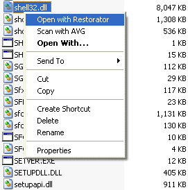
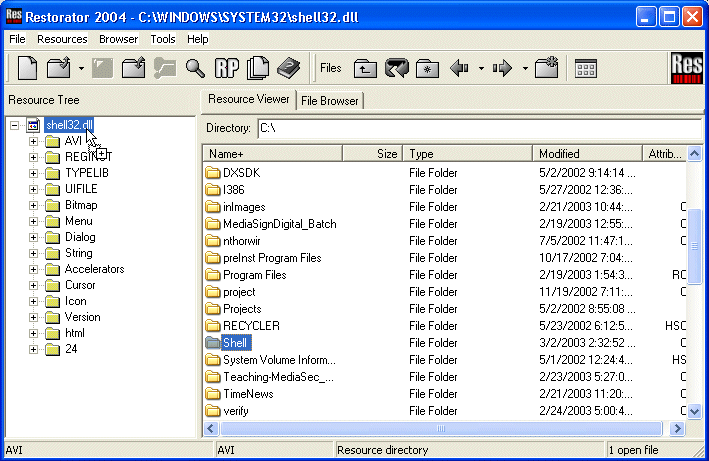

|
Help Overview Manual Tutorials FAQ Purchase Restorator Web |
Restorator
Extract Resources Tutorial
Tutorial: Extracting all Resources at once
| Note: the screenshots in this tutorial originate from an older version of Restorator. |
For this tutorial, I chose shell32.dll for demonstration. It can be found in the folder "Windows\System" (95/98/ME) or "Windows\System32" (NT/2000/XP).
1. Open shell32.dll
Here you'll learn a new way to open a file: use the pop-up context menu of Windows Explorer. For that, go to the folder given above and search the file shell32.dll. Then click with the right mouse button on it and select the entry "Open with Restorator".
2. Extract all resources
At first, to create a working space on your disk e.g. C:\Shell.
You can use the File Browser in Restorator and the tool button New Folder . I called this new folder "Shell". Then I drag the file Shell32.dll from the Resource Tree and drop it on the new folder in the File Browser. Alternatively you could use the function "Extract all" of the Resources menu or the pop-up menu of Shell32.dll.
Like that you can easily build up your private icon database...
Resource types, which are not recognized (yet) by Restorator, just have the extension "raw". Like this you can identify raw resource files (see the technical specifications for details on resource types known by Restorator). We will extend continuously Restorator's range of known resources.
3. Assign ALL resources
You can do the inverse process and assign all resources at once ! This may be useful when you have done a lot of modifications to your resource files. You may want to create your own "flying files"-animation and/or change your system-icons... Like that you can create your own version of Windows !
|
 |
So to assign all at once, drag the folder "Shell" and drop it on shell32.dll in the Resource Tree. Again, you could use the menu "Resources" or the pop-up menu of shell32.dll to select the function "Auto assign all resources".
 When Restorator encountered any problems or errors during the
auto assign process, it will display a dialog with the list of
problems. As an example, we hacked the version resource file to be broken. Since the file is not a valid version resource anymore,
Restorator shows the dialog at right. The first
line specifies the error message. The second line specifies
the source file on disk, and the third line specifies the
resource which couldn't be assigned to.
When Restorator encountered any problems or errors during the
auto assign process, it will display a dialog with the list of
problems. As an example, we hacked the version resource file to be broken. Since the file is not a valid version resource anymore,
Restorator shows the dialog at right. The first
line specifies the error message. The second line specifies
the source file on disk, and the third line specifies the
resource which couldn't be assigned to.
Now you understand how to work with applications when you'd like to completely change them and to process it in a batch. If you need more batch functionality including several applications, see example 8.
Copyright 1997-2007 by bome.com